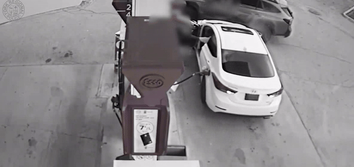
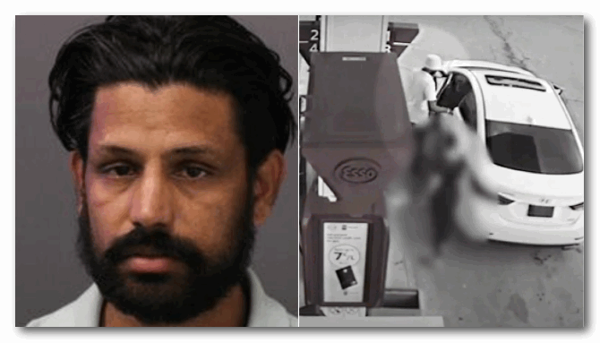

约克区警方公布了上周六安省Newmarket一名受害者在加油时遭遇劫车的视频。目前调查人员仍在搜寻嫌疑人。
约克区警察(YRP)表示，8月3日下午6点30分左右，警察被叫到位于Mulock Drive East和Harry Walker Parkway地区附近的加油站。
在警方周二公布的监控视频中，可以看到受害者当时正在车尾部给汽车加油，这时嫌疑人靠近并打开了驾驶座的车门。
受害者随后也跟着进入驾驶座，两人似乎争执了几分钟，之后另一辆车的司机将车横停在了嫌犯前面，挡住了他的去路。警方称这位司机是一位好心人。
但嫌犯不管不顾直踩油门撞上了好心人的车，受害者下了车，嫌犯迅速倒车。驾驶坐一侧的车门大开，随着倒车直接撞上了加油站设施。同时，还扯断了车辆仍然连接着的油管。随后，嫌疑人逃离了现场。
警方称，没有人员受伤。
在周二的新闻稿中，警方在劫车之前这名嫌疑人因一项无关指控被警方逮捕，但在保释听证会之后被释放。
警方接着说，那天晚上晚些时候，大约晚上9点，安省警察在Caledon的Mayfield和Bramalea路地区处理了一起肇事逃逸事件。约克区的调查人员表示，其中一辆车就是被劫的那辆。
警方称，嫌疑人步行逃离了现场。警方表示:“尽管动用了无人机和警犬部队，还是无法找到嫌疑人。”

39岁的Giani Zail Singh Sidhu没有固定住址，已被警方确认为嫌疑人。据描述，他是一名男性，身高5尺8，身材瘦削，留着黑色中等长度的头发和胡须。
他被控犯有抢劫罪，危险操作交通工具罪，两项事故后未停车罪，非法占有超过$5000的财产，以及未遵守保释条令罪。
警方表示：“调查人员呼吁目击者出面作证。警方还希望与任何在事发时在该地区有视频监控或行车记录仪录像的人交谈。”
嫌犯最后一次露面时身穿浅蓝色短袖 Polo 衫、黑色运动裤、囚犯穿的藏青色便鞋，戴着白色或棕褐色渔夫帽。
警方请求任何掌握与调查相关线索的人联系约克区
警察局劫持行动小组，电话 1-866-876-5423，分机 6630，或匿名拨打犯罪热线。
图片：警方